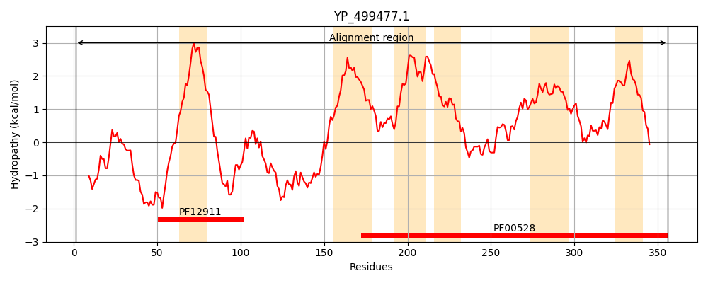
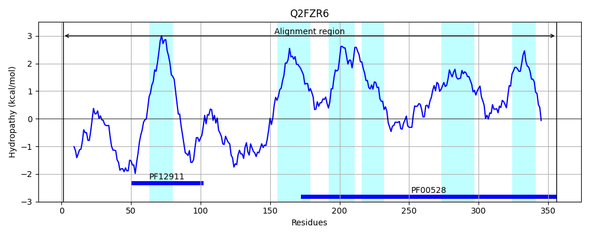
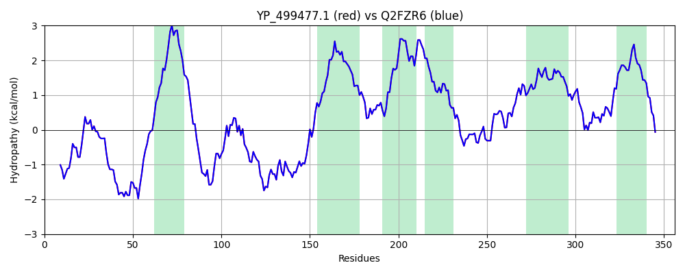

Hit Accession: Q2FZR6
Hit TCID: 3.A.1.5.19
Hit Description: gnl|BL_ORD_ID|13237 gnl|TC-DB|Q2FZR6|3.A.1.5.19 Putative uncharacterized protein - Staphylococcus aureus (strain NCTC 8325).
Mach Len: 356
e:0.000000
Query TMS Count : 6
Hit TMS Count: 6
TMS-Overlap Score: 6.150000
Predicted Substrates:CHEBI:7755;oligopeptide
BLAST Alignment:
Score: 1819 , Bit scores: 705 bits, E-value: 0.0e+00, Alignment length: 356, Percentage identity: 100
Query: 1 MAENKNNLSINDDHSNAAMTHTSDAIASSDFIIRELDLNQEPEMQRESKNFWQDAWAQLKRNKLAVVGMIGLIIIVIFAFIGPVINKHDYAEQNVEHRNLPAKIPVLDKVPFLPFDGKDADGKDAYKAANAKENYWFGTDQLGRDLWTRTWKGAQISLFIGVVAAMLDIFIGVVYGAISGFFGGRVDTIMQRILEVIASIPNLIVVILFVLIFEPSIWTIILAMSITGWLGMSRVVRGEFLKLKNQEFVMASKTLGASKFKLIFKHILPNTLGAIVVTSMFTVPSAIFFEAFLSFIGIGVPAPQTSLGSLVNDGRAMLLIYPHELFIPAMILSLLILFFYLFSDGLRDAFDPKMRK 356
MAENKNNLSINDDHSNAAMTHTSDAIASSDFIIRELDLNQEPEMQRESKNFWQDAWAQLKRNKLAVVGMIGLIIIVIFAFIGPVINKHDYAEQNVEHRNLPAKIPVLDKVPFLPFDGKDADGKDAYKAANAKENYWFGTDQLGRDLWTRTWKGAQISLFIGVVAAMLDIFIGVVYGAISGFFGGRVDTIMQRILEVIASIPNLIVVILFVLIFEPSIWTIILAMSITGWLGMSRVVRGEFLKLKNQEFVMASKTLGASKFKLIFKHILPNTLGAIVVTSMFTVPSAIFFEAFLSFIGIGVPAPQTSLGSLVNDGRAMLLIYPHELFIPAMILSLLILFFYLFSDGLRDAFDPKMRK
Sbjct: 1 MAENKNNLSINDDHSNAAMTHTSDAIASSDFIIRELDLNQEPEMQRESKNFWQDAWAQLKRNKLAVVGMIGLIIIVIFAFIGPVINKHDYAEQNVEHRNLPAKIPVLDKVPFLPFDGKDADGKDAYKAANAKENYWFGTDQLGRDLWTRTWKGAQISLFIGVVAAMLDIFIGVVYGAISGFFGGRVDTIMQRILEVIASIPNLIVVILFVLIFEPSIWTIILAMSITGWLGMSRVVRGEFLKLKNQEFVMASKTLGASKFKLIFKHILPNTLGAIVVTSMFTVPSAIFFEAFLSFIGIGVPAPQTSLGSLVNDGRAMLLIYPHELFIPAMILSLLILFFYLFSDGLRDAFDPKMRK 356 | Protein Hydropathy Plots: |
|---|
|  |  |
Pairwise Alignment-Hydropathy Plot:
|
|---|
|  |